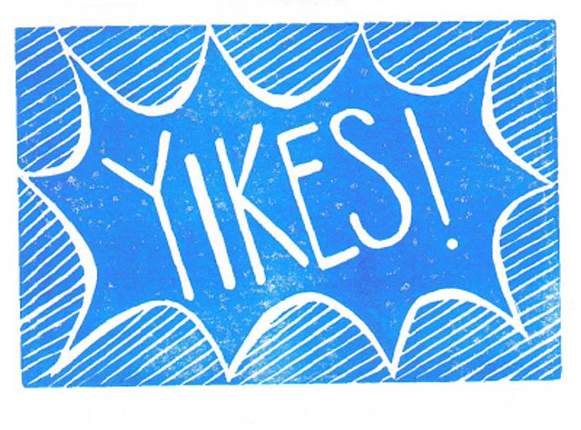

The N-Word
When I posted the Who’s/Whose Normal? article a few weeks ago, I expected the “N-word” of interest to be Neger, a term that falls somewhere between “negro” and “nigger” on the translation and offensiveness spectrum. Instead, the strongest reactions came in response to another N-Word: Nazi.
{kind=link}
For those who haven’t read the original post, the controversy stemmed from a comparison I made between a Berlin storefront poster campaign and Nazi propaganda (on an aesthetic – not political – basis). On second thought, I shouldn’t put that last bit in parentheses, because it’s the essence of my point. Despite Berlin being Germany’s most ethnically and culturally diverse city, these particular storefront posters feature only heterosexual Caucasian families. On an aesthetic basis (skin tone, facial features, body build), they don’t differ much from the fair blond couples on Nazi posters. A couple brunettes are included here or there, but I don’t consider that diversity. The bad man himself was a brunette, no? That’s probably not going to make me any friends either.
{kind=link}
While I am in no way comparing the people from this store to Nazis (I repeat: in no way!), I was disappointed by these posters and the message they send. On multiple posters and within an entire website, I find it disconcerting to see only one type of ethnicity, sexuality, and idea of beauty. And both creative process scenarios – whether Leiser consciously made this decision or didn’t realize that this is what they were doing – are also disconcerting.
Although many agreed with me that the images were problematic, my Nazi comparison was not as well-received. In the spirit of promoting discourse and “seeing things from every lens”, I thought it critical to share a selection of these reactions. Disclaimer: All German comments have been loosely translated by yours truly.
German Commenter 1: In the U.S., you use the term “Nazi” as a joke, e.g. “You’re a cleaning Nazi”, just like we say the term Negerküss [Nigger-kiss]. Neither group considers the history and context of the other. In Germany, we only call really evil and abominable people Nazis, people who seem to be OK with what the Nazis did. It is the worst insult you can give someone. That’s why it’s such a hard pill for me to swallow when “normal” people (even if they are racist or discriminatory) are compared with Nazis, just like it is hard for Americans when they hear us use the term Neger.
German Commenter 2: Sophia, you have to be really careful with the use of the term “Nazi”. Your comparison [of the storefront posters] to Nazi propaganda goes too far. Germans have a total complex when it comes to our history and you can’t just make that sort of comparison. As an American, you can’t understand how hard it is growing up with this history… You’re not exactly going to make friends with this sort of comparison.
German/American Commenter in response to above: Is being critical un-German? Isn’t that how the Germans got into the Nazi/Holocaust mess to begin with?
American Commenter in response to above: Oh my god! Do these people seriously believe that anti-black racism is the same as calling someone “a cleaning Nazi”?? And that you can’t possibly understand that because you didn’t grow up there? WTF! I’m not jumping in because I don’t want to hijack a thread and you’re being much more diplomatic than I would be, but dude! What the hell!
Me after reading the comments
{kind=link}
What these comments have made clear is that context is paramount in the interpretation of language. Perhaps more importantly, however, it has made clear that one shouldn’t limit themselves to only their immediate context. We can’t always dissect every word to see if it may offend someone, but we should be more mindful of the political, cultural, and historical contexts of other groups when using potentially hurtful language.
I’ve often heard that Americans are more PC (politically-correct) than Europeans. Yet, this discussion has shown me that that is not necessarily the case. All nations have sore spots in their histories – some more recent than others, some that should be sorer than they seem to be – where we need to tread lightly. We also handle these sensitive topics differently. There’s still no slavery memorial in Washington, DC, but the German capital is laden with memorials and museums acknowledging their “black mark on history”. Americans are known for being the kings (& queens!) of PC language, but the Germans actually came up with a dictionary of Nazi terms to promote awareness of their use.
{kind=link}
“A ‘Coming To Terms With The Past’ Dictionary: The use of Nazi language in public speech” (Source)
{kind=link}
Yes, the Germans have a word for “coming to terms with the past”: Vergangenheitsbewältigung. Vergangenheit simply means “the past”, but bewältigen can translate to several verbs, including “to overcome”. What does it mean – as nations and people -to overcome difficult periods in our history? Does it mean erecting public memorials and monuments? Does it mean holding companies responsible for the images that they portray and promote? Does it mean never using the “N-word” or, alternately, being able to use it as a joke? I’m all ears and mindful speech.
– By Sophia Burton
This all too serious topic is often, unfortunately, distorted and used to gain political points.
Thank you for a commentary that is at once impartial, informed and heartfelt. We need more of those. Keep up the good work.